Como Project Manager
Tomo un objetivo, lo vuelvo un plan con hitos y responsables, hago seguimiento diario y protejo la fecha y la calidad.
- Cronogramas e hitos
- Stakeholders
- Calidad de entregables
- KPIs
- Scrum / Agile
Estratega digital y Marketing Project Manager.
Convierto objetivos de negocio en
planes que un equipo puede ejecutar.contenido que conecta.lanzamientos a tiempo.equipos alineados.
Esto es una exposición de cómo pienso y trabajo. Haz scroll y se mueve hacia el lado →
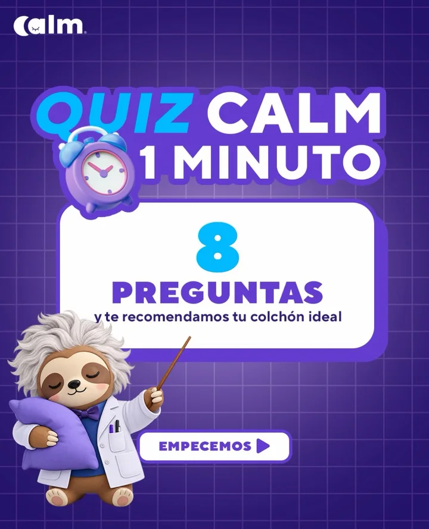
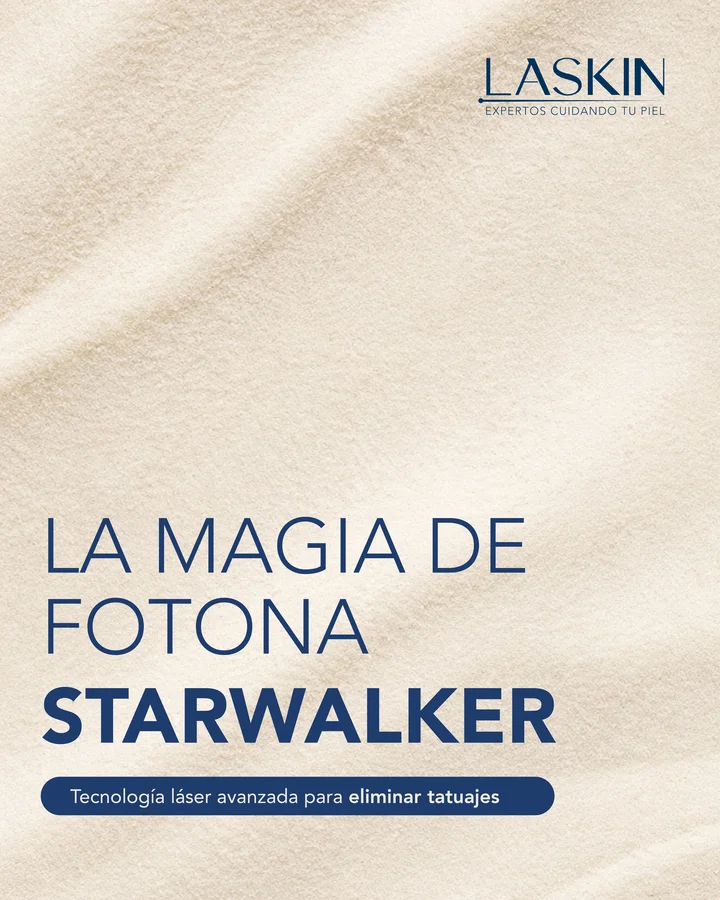
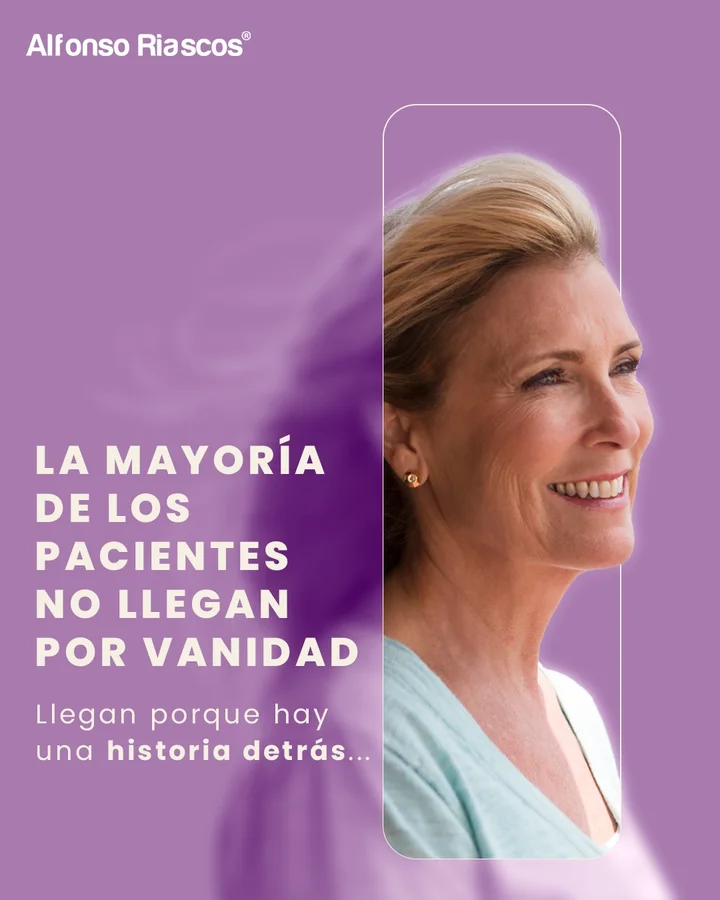
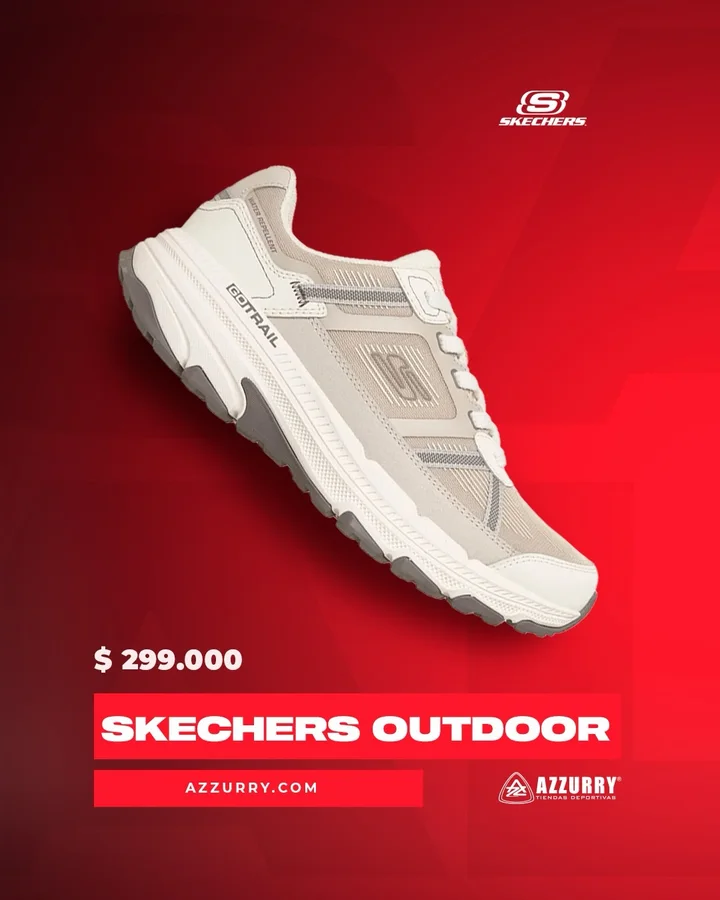
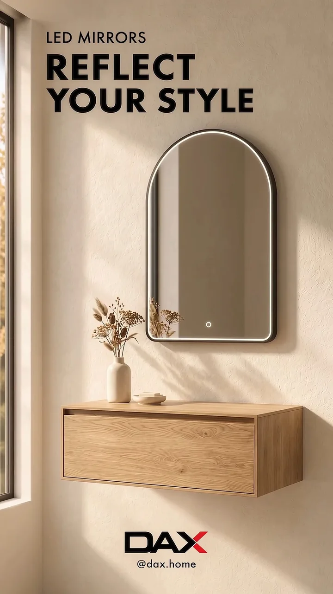
Tomo un objetivo, lo vuelvo un plan con hitos y responsables, hago seguimiento diario y protejo la fecha y la calidad.
Defino qué decir, a quién, dónde y para qué: redes, contenido, e-commerce y marca funcionando como un solo sistema.
También me ensucio las manos: escribo copys y guiones, armo piezas con IA y reviso cada detalle antes de publicar.
Todo proyecto pasa por las mismas seis preguntas. Así mantengo conectadas la estrategia, las personas y la ejecución, y así sé qué hacer cuando algo cambia.
Pasa el cursor o haz clic en cada paso ↗
Un plan que todos entienden: qué, quién, cuándo y cómo lo vamos a medir.
Creativos, técnicos, comerciales y líderes remando hacia el mismo lado.
Hitos, seguimiento y revisión para que nada llegue a medias al cliente.
Repriorizo rápido, realineo al equipo y mantengo intacto el objetivo.
Tono, identidad visual y posicionamiento coherentes en todos los canales.
KPIs que nos dicen qué repetir, qué cambiar y qué dejar de hacer.
Estos son los documentos que construyo para que un equipo siempre sepa para dónde vamos y cómo vamos.
Objetivo, audiencia, mensaje y KPI de éxito.
Quién hace qué y para cuándo.
Pilares y formatos, semana a semana.
Estado de cada tarea, visible para todos.
Qué pasó, por qué y qué sigue.
Qué mantenemos, cambiamos o soltamos.
Conozco a los stakeholders, los objetivos, las métricas actuales y cómo se aprueban las cosas.
Diagnóstico rápido, prioridades, cronograma y calendario acordados con el equipo.
Primeras campañas y entregables en marcha, con un ritual semanal de seguimiento.
Leo los KPIs con el equipo, comparto aprendizajes y propongo el siguiente plan.
Piezas reales de las marcas con las que he trabajado: reels, carruseles y campañas pensadas para detener el scroll y mover el negocio.
Ver los casos →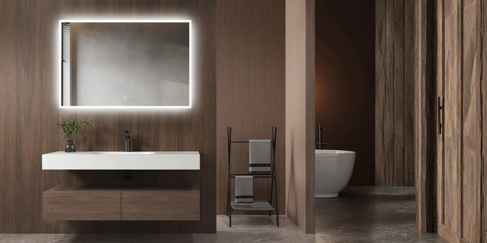
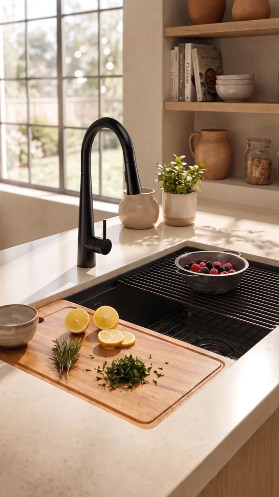
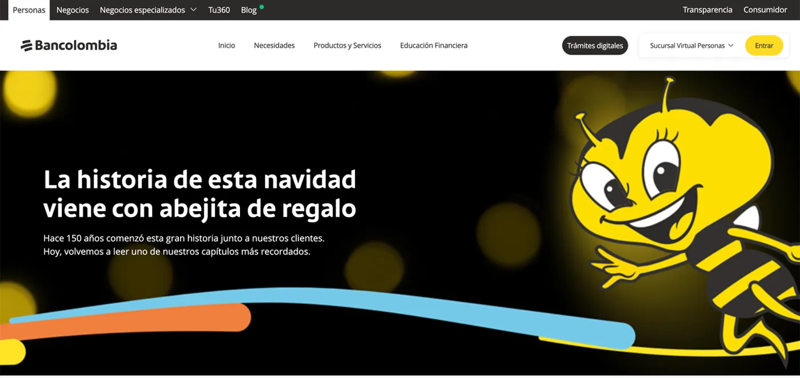
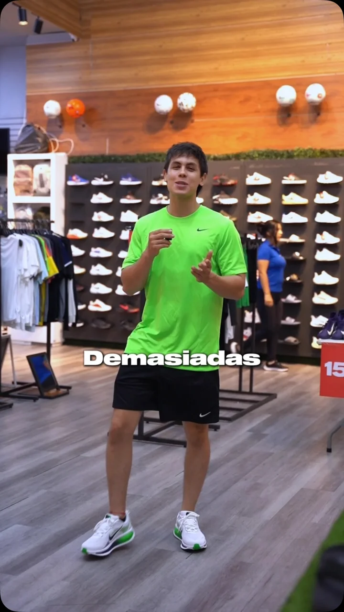
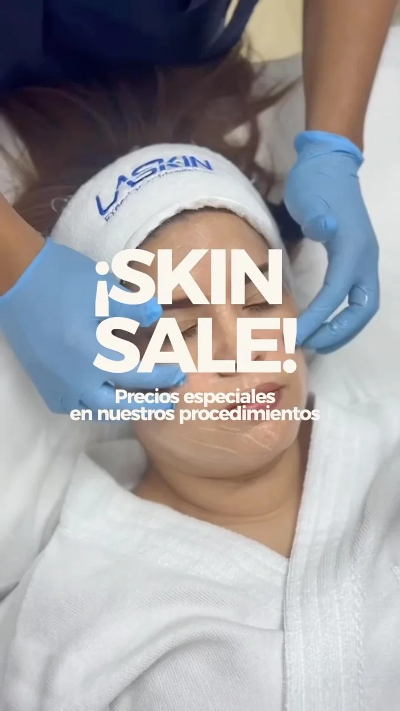
Haz clic en una marca para ver el trabajo
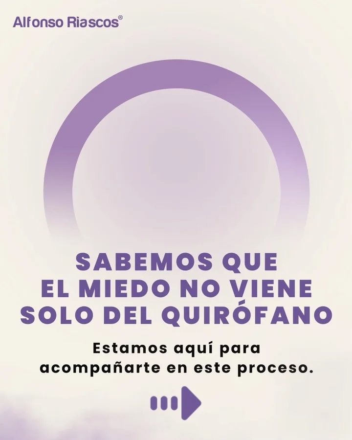
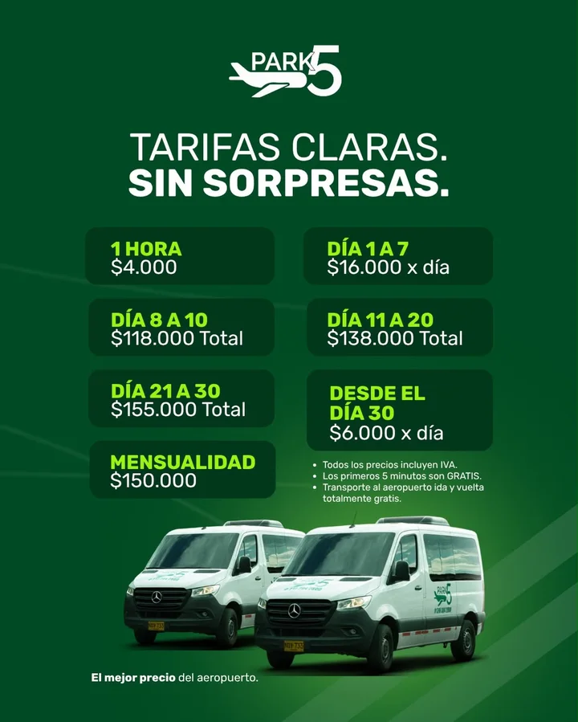
Estratega de marketing digital y project manager de Medellín, Colombia. Profesional en Negocios Internacionales con Especialización en Mercadeo Gerencial. Casi 5 años en social media, contenido y e-commerce.
Disciplina, adaptación y calma bajo presión. Comunico con claridad y llevo cada proyecto de la idea a la ejecución. He trabajado en remoto con equipos de EE. UU., España, Francia, Italia, Argentina y LATAM.
IA con Gemini (Google) · IA para negocios y mercadeo · Scrum y metodologías ágiles · IT Project Management · Design Thinking. Herramientas: Meta Business Suite, Meta Ads, Google Ads, Shopify, Canva, CapCut, Figma, Claude.
Si necesitas a alguien que convierta objetivos en planes y planes en resultados, dentro de tu equipo o en un proyecto puntual, empecemos por una conversación.
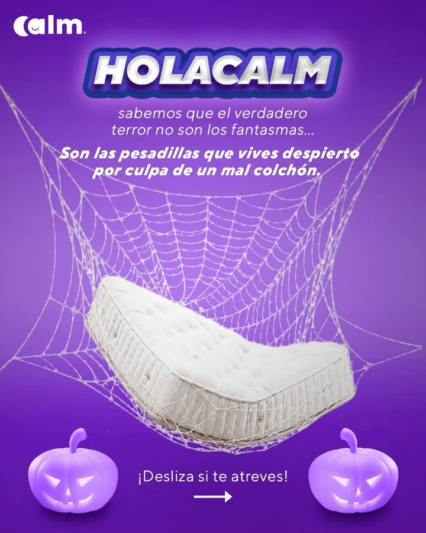